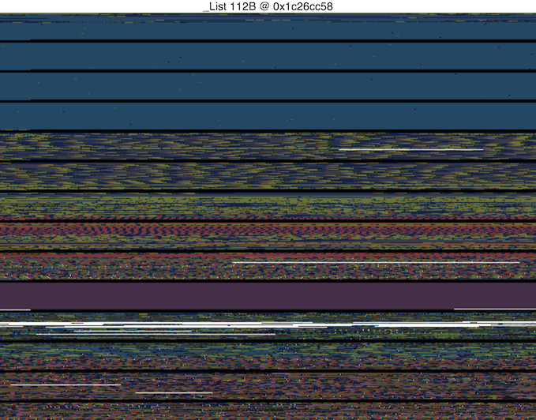
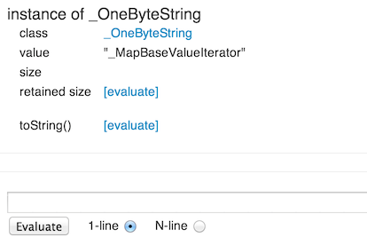

Observatory’s heap map allows you to peek into the old space portion of the memory heap at a single moment in time for a particular isolate.
The heap map displays blocks of memory in colors. A page of memory is 256 KB and each page is separated by a horizontal black line. Each pixel in the map represents two words of memory. The color of a pixel represents the class ID of the object—for example, blue for strings and green for doubles. Free space is white, and instructions (code) are purple.
If you initiate garbage collection (using the GC button in the Allocation Profile screen) more white space (free space) appears in the heap map.
The following screenshot shows a sample heap map.

As you hover the cursor over the map, the status bar at the top displays
information about the object represented by the pixel under the cursor.
The displayed information includes the type, size, and address of that object.
In the previous example, the cursor
hovers over a _List object using 112 bytes of old space, and located at
address 0x1c26cc58.
The primary purpose of this screen is to get a general idea of whether your app is suffering from memory fragmentation. If you see a block of free (white) space, with lots of little allocated areas scattered through out, this suggests memory fragmentation— perhaps those blocks are actually leaked objects.
It is difficult (maybe impossible) to find a specific object in the heap. The most direct way to examine fields defined at the class level (or any non-local field), is to use the library or class screen, as appropriate.
However, local variables can’t be accessed from those screens. If you want to try and locate a particular object, you can use the browser’s zoom feature to increase your chances.
Clicking a pixel takes you to an instance screen describing that object. For example:

You can then enter Dart code in the text field to query or control the instance. For information on how to use this text field, see Evaluating Expressions.